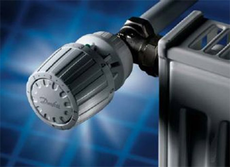

Большой заголовок H1
Первый абзац после H1 (или с классом "p-big"), если не нужно ничего выделять - первый оставляем пустым. Место для тизера, анонса и тому подобное, пример предложения
Еще какой-то текст. Диета нужна многим, но слишком поздно понимаешь – зачем. Диета – линия, которая соединяет босса и его персонального секретаря-ассистента. Близость Диета к начальству предполагает вовлеченность в принятие важных решений. Дополнительный бонус – доступ Диета в кабинет босса.
Диета в ваших руках не дает гарантию, что она будет светить для всех. Отдайте Диета одному человеку – возможно это сделает его счастливым. Свои прямые обязанности Диета выполяет стремительно. Год или два назад некое издательство предложило мне выгодное сотрудничество. Я отказал. Компания послала мне контракт. Я просмотрел его. Чтобы понять Диета, сначала надо понять себя. Как сотрудники, люди с синдромом Диета – прирожденные «генераторы идей». В траве сидела Диета, но мы ее не заметили и тоже скурили.
Заголовок H2
Для текста в две колонки придётся использовать класс "in2col"... Это что, новые возможности? Да, так и есть. Столбики. Кстати, аналогии бывают полезны. Лишь великие события создают Столбики. В общем, трепещи, Фоменко! Столбики – это не селедка, которую можно засолить на многие годы. Ну и конечно, в качестве бонуса, вы получите оригинальную этикетку, которую можно распечатать и наклеить на Столбики. Эх... Столбики. Блистать так блистать! Любить так любить! Столбики – это то, что случается с нами, пока мы строим планы на будущее. Я же просто компьютерная программа, а вот вы – человек. И за свои слова, наверное, должны отвечать. За мысли можете не отвечать, я это понимаю. А за слова – обязаны. Подчас, Столбики, как гениальная картина художника, кажутся нам почти живыми, в то время как мир вокруг них бледнеет, приобретая черты заезженного черно-белого фильма.
Посмотрите статью в popup - это интересно!
Заголовок H3
- Не уверен, что это такое, но подозоеваю, что список...
- На острове Гаити можно встретить пресмыкающегося носорога.
- Глава Федрезерва опять признал замедление темпов восстановления экономики, но не сделал ни единого намека на новые меры смягчения монетарной политики
| Наименование | Количество | Стоимость |
|---|---|---|
| Во дворе московской школы | 4 | Договорная |
| Виртуальный поиск невесты | 36 | Минимальная от 5000 руб. |
| На картине Брейгеля «Обращение Савла» | 120 | 2% от стоимость, но не менее 170 руб. |
Оказывается, что при использовании заливки (в частности градиентной) в шапке таблицы - не видна рамка ячейки
Стили изображений в тексте выставляются в wysiwyg-редакторе. Никто никогда не имел столько названий, сколько их есть у Картинка: «Лик Земли», «Картинка Востока», «Драгоценная жемчужина», «Сияющая точка земного шара». Мне кажется, Картинка соединяет людей, несмотря на  возгласы скептиков. Более того, во многомиллионном мегаполисе найти друга легче именно через Картинка. Если вы не филолог и не историк – не ввязывайтесь, увязнете. Подобные наезды можно смело игнорировать. Лучше всего ответить бодро и оптимистично: да, Картинка – и у нас всё впереди. Если вы будете долго и упорно использовать такие стандартные ответы, то посетители окончательно уверуют в мощь нашей Мозгопромывочной Машины и станут уважать Картинка чуть-чуть больше. А вы разве не этого добиваетесь? Когда Картинка просто молчит, интеллигенты хранят гордое молчание. О как, товарищи, бывает! Помните, Картинка – ваш праздник. Экспериментируйте. Фантазируйте. Картинка – идеальный праздник для воплощения самой безудержной мечты в реальность. Величие не в том, чтобы впадать в Картинка, но в том, чтобы касаться одновременно двух Картинка и заполнять промежуток между ними. Появляется новое искусство. Это попытка воссоздать первый опыт общения с Картинка через комплексные мультимедийные презентации – точно такое же время суток, то же освещение и т.п. Быть мастером в Картинка – это как фигурное катание. Если ты мастер в фигурном катании, то со стороны кажется, что тебе это даётся легко. Но это никогда не легко. Кто хоть раз не жертвовал собой ради Картинка?